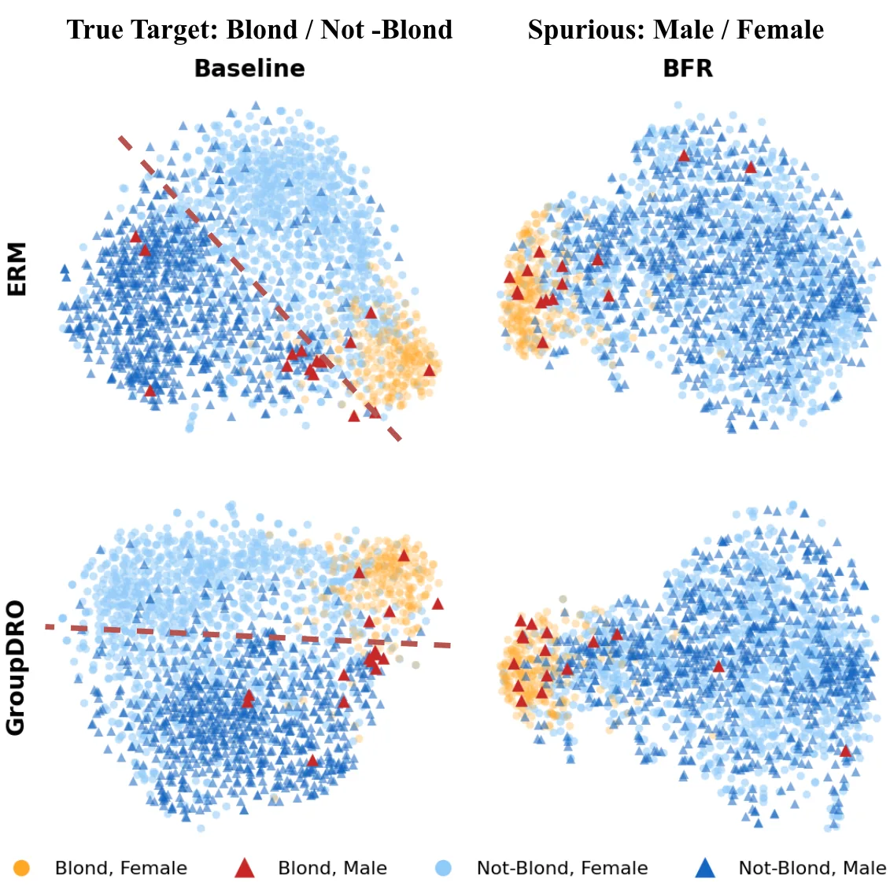
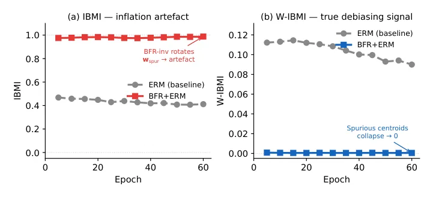
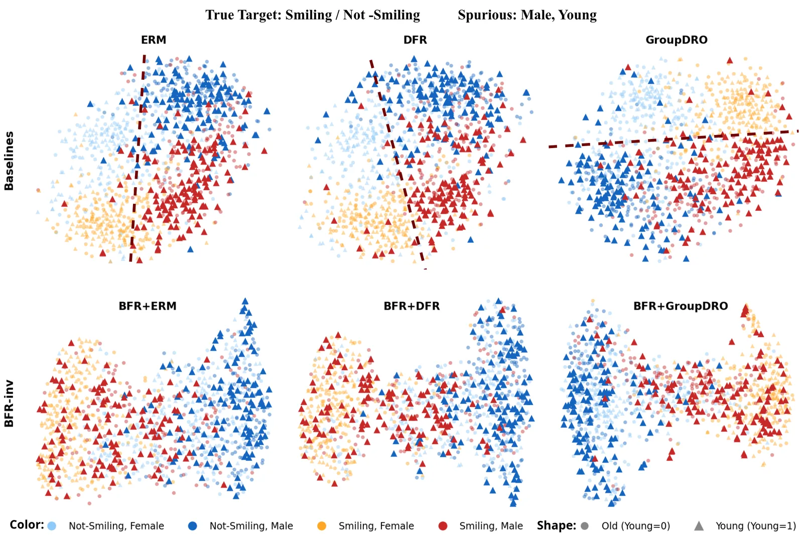

O problema: correlações espúrias e a ilusão de robustez
Redes neurais treinadas com Empirical Risk Minimization (ERM) — o método padrão que minimiza o erro médio — costumam explorar correlações espúrias: atributos irrelevantes para a tarefa que aparecem junto com o rótulo nos dados de treino. Um exemplo clássico é o dataset CelebA, onde o atributo 'cabelo loiro' correlaciona fortemente com 'gênero feminino'. Um classificador pode aprender a prever 'cabelo loiro' usando 'gênero' como atalho, falhando quando essa correlação muda no mundo real.
A métrica mais usada para avaliar esse problema é a Worst-Group Accuracy (WGA): a acurácia mínima entre todos os grupos definidos pelo cruzamento de classe e atributo espúrio. Métodos como GroupDRO, LfF, JTT e DFR reportam ganhos expressivos em WGA. Mas os autores deste paper fazem uma pergunta incômoda: WGA alta significa que o modelo realmente parou de depender do atributo espúrio, ou apenas que o classificador final (a última camada) compensa o viés codificado nas camadas anteriores?
A distinção é importante. Se a representação interna — o backbone congelado — ainda codifica o atributo espúrio de forma separável, um novo classificador treinado sobre ela pode voltar a explorar o atalho. DFR já mostrou que retreinar apenas a última camada com dados balanceados melhora WGA sem alterar o backbone. Mas o que acontece se retreinarmos a cabeça com dados enviesados, como os originais? O backbone resiste ou volta a permitir exploração?
A proposta: BiasFlow e suas duas faces
BiasFlow é um toolkit que combina diagnóstico geométrico e regularização. A parte de diagnóstico introduz duas métricas: IBMI (Inter-class Bias-alignment Metric Index) e W-IBMI (Within-class IBMI). IBMI mede o alinhamento dos centróides de classe com a direção média do atributo espúrio no espaço de features. Um IBMI alto indica que as classes estão organizadas ao longo do eixo do atributo — mas isso pode acontecer simplesmente porque a composição das classes já está correlacionada com o atributo, sem que o modelo tenha aprendido a usá-lo causalmente.
Por isso, os autores propõem W-IBMI, que mede a separação dos centróides de subgrupos dentro de cada classe. Se, para uma mesma classe, os exemplos com e sem o atributo espúrio formam centróides distantes, isso indica que o backbone codifica o atributo de forma separável dentro da classe. W-IBMI é sensível à escala das features e não estabelece, por si só, que o atributo foi removido — mas verifica se a quantidade que a regularização otimiza de fato diminuiu.
A segunda parte é BiasFlow Regularization (BFR), uma penalidade supervisionada que força os centróides de subgrupos dentro de cada classe a se alinharem. BFR usa as anotações de atributo espúrio durante o treino e adiciona um termo de perda que minimiza a distância entre os centróides condicionais de cada classe. O hiperparâmetro λ controla a força da penalidade; o paper usa λ=20 por padrão e λ=1 para JTT, que já aplica upweighting agressivo de 50× nas amostras raras.

Como funciona a regularização BFR
BFR calcula, para cada classe, os centróides das features dos exemplos com e sem o atributo espúrio. A penalidade é a distância euclidiana entre esses centróides, somada sobre todas as classes. Durante o treino, o modelo é incentivado a produzir representações onde subgrupos de uma mesma classe fiquem próximos no espaço de features, independentemente do valor do atributo.
Os centróides são estimados com uma média móvel exponencial (EMA) com α=0.9, para estabilizar o cálculo ao longo dos minibatches. A regularização tem um warmup de cinco épocas por padrão, e o toolkit permite configurar rampas e paradas fracionais. A implementação usa hooks do PyTorch para monitorar as features intermediárias sem modificar a arquitetura do modelo.
BFR é supervisionado: exige anotações de atributo espúrio no treino, assim como GroupDRO. Isso o coloca em desvantagem frente a métodos não supervisionados como LfF ou JTT, que tentam descobrir o viés automaticamente. Mas a supervisão permite um controle geométrico direto, e os autores argumentam que a comparação justa é com outros métodos supervisionados, não com baselines que operam sob restrições diferentes.
Resultados: WGA melhora, mas o backbone resiste?
Os experimentos cobrem CelebA-Std (Blond Hair/Male, ResNet-18 e ResNet-50), CelebA-MB (Smiling com dois atributos espúrios, Male e Young), UrbanCars (urbano/rural com fundo e objetos correlacionados) e Waterbirds (tipo de pássaro/fundo). Cada configuração roda com três seeds, e a seleção de checkpoint usa WGA de validação para CelebA-Std, mas acurácia média para CelebA-MB e UrbanCars — uma inconsistência que os autores reconhecem e preservam, mas que dificulta comparações diretas.
No CelebA-Std ResNet-18, BFR+ERM melhora WGA de 47.3% para 70.8% (+23.5 pontos percentuais). BFR+LfF sobe de 78.9% para 81.2% (+2.3 pp), BFR+DFR de 81.2% para 88.9% (+7.7 pp), e BFR+GroupDRO de 86.3% para 88.3% (+2.0 pp). No ResNet-50, os ganhos são menores mas consistentes: BFR+LfF +6.7 pp, BFR+DFR +4.1 pp. GroupDRO atinge 88.5%, abaixo dos 90.4% reportados por HierDRO em outro trabalho — uma diferença de implementação que os autores documentam.
UrbanCars mostra o maior ganho: BFR+ERM salta de 35.7% para 61.7% (+26.0 pp). Waterbirds tem ganhos positivos, mas BFR+JTT é praticamente neutro (80.9% vs 80.8%). No CelebA-MB, BFR+GroupDRO adiciona +12.5 pp sobre GroupDRO sozinho. Os autores enfatizam que esses ganhos descrevem as pipelines testadas, não uma garantia universal de melhoria.

O teste de estresse: retreinar a cabeça com dados enviesados
O experimento mais revelador congela o backbone e retreina apenas a última camada (a 'cabeça') com dados enviesados, simulando o cenário onde um modelo pré-treinado é adaptado a uma nova tarefa com viés. No CelebA-Std, GroupDRO atinge 86.3% WGA end-to-end, mas quando sua representação congelada recebe uma nova cabeça treinada com dados enviesados, a WGA cai para 40.7% — quase igual ao ERM puro (40.0%). Isso indica que o backbone de GroupDRO ainda codifica o atributo Male de forma explorável.
Aplicar BFR+GroupDRO melhora esse cenário: a WGA sob retreinamento enviesado sobe de 40.7% para 64.1%. Simultaneamente, a acurácia de um probe linear para o atributo Male cai de 92.5% para 72.2%. Esses são dois fatos distintos: a nova cabeça enviesada tem desempenho melhor, e um probe separado ainda consegue recuperar o atributo, embora com mais dificuldade. Nenhum dos dois estabelece que a cabeça original de GroupDRO usava Male causalmente — mas juntos sugerem que BFR torna a representação mais resistente à exploração por um novo classificador enviesado.
Os autores são explícitos: 'Attribute information remains recoverable, and cross-task results are mixed.' A informação do atributo não foi apagada; ela apenas ficou menos separável linearmente. Isso é consistente com a literatura de concept erasure, que mostra que remover direções lineares raramente elimina completamente a informação de um conceito em redes profundas.
Auditoria geométrica: IBMI não garante descontaminação
A auditoria de IBMI nos backbones treinados revela que nenhum método de saída (output-level) reduz sistematicamente o IBMI abaixo do ERM. Pior: LfF e DebiAN frequentemente aumentam o IBMI. No CelebA ResNet-50, LfF tem IBMI de 0.881 e DebiAN de 0.896, contra 0.559 do ERM. Isso não significa que LfF e DebiAN pioraram o modelo — significa que o alinhamento dos centróides de classe com o eixo do atributo aumentou, possivelmente porque a composição de classe mudou durante o treino.
JTT mostra IBMI muito baixo em Waterbirds (0.060 vs 0.357 do ERM) e CelebA-MB (0.013 vs 0.274). Os autores resistem à tentação de interpretar isso como evidência de que JTT remove o atributo: 'These are dataset-specific alignment outcomes, not anomalies to discard or evidence that JTT universally removes attribute information.' Sem eixos controlados ou intervenções causais, IBMI é apenas uma medida observacional.
A confusão sobre DFR merece nota: a versão inicial do paper afirmava que a linha DFR na tabela de IBMI seria idêntica ao ERM por construção, já que DFR congela o backbone de ERM. Mas a implementação salva na verdade treina DFR do zero em seu primeiro estágio, então os valores de IBMI diferem (0.404 ERM vs 0.502 DFR no CelebA-R18). Os autores corrigiram a afirmação, documentaram a fonte da discrepância e mantiveram os números — um exemplo de transparência metodológica rara.

W-IBMI: a métrica que rastreia o objetivo
W-IBMI mede a distância entre centróides de subgrupos dentro de cada classe — exatamente a quantidade que BFR penaliza (a formulação BFR-inv difere apenas em detalhes de estimação). Por isso, W-IBMI não é evidência independente de remoção de atributo; é uma verificação de que a regularização fez o que deveria fazer. A Figura 4 ilustra a diferença: IBMI pode subir enquanto W-IBMI cai, porque o eixo do atributo espúrio é dominado pela composição de classe.
Na maioria das configurações, BFR reduz W-IBMI substancialmente. Há exceções explícitas: BFR+GroupDRO ResNet-50 e um resíduo de 0.004 no Waterbirds JTT. Os autores preservam esses números e os interpretam como mudanças de primeiro momento sob uma convenção de features fixa, não como prova de que todas as distribuições de subgrupo ficaram idênticas.
A dependência de escala é importante: W-IBMI usa features não normalizadas, então arquiteturas ou inicializações diferentes podem produzir valores incomparáveis. Os autores não normalizam porque querem rastrear a penalidade real aplicada durante o treino, mas isso limita comparações entre modelos.
Experimento sintético: marca d'água no ImageNet
Para testar BFR em um cenário controlado, os autores introduziram uma marca d'água sintética em um subconjunto do ImageNet-1K. Durante o treino, 90% das imagens de certas classes recebem a marca; no teste de shift, as proporções invertem. Esse setup isola o efeito da correlação espúria de confundidores naturais presentes em datasets reais.
BFR melhora a acurácia no grupo com shift de marca d'água em +23.0 pontos percentuais sob treino pareado (matched training). Esse ganho é expressivo, mas os autores não o extrapolam: 'These results support evaluating centroid geometry and resistance to biased head retraining alongside WGA, within the tested protocols.' O experimento valida o mecanismo em condições controladas, mas não estabelece que BFR funcionará igualmente bem em todos os tipos de viés natural.
Limitações e o que o paper não mostra
Os autores são diretos sobre as limitações. Primeiro, BFR requer anotações de atributo espúrio no treino, o que nem sempre está disponível. Segundo, W-IBMI rastreia o objetivo de BFR, não é uma medida independente de descontaminação. Terceiro, a informação do atributo permanece recuperável por probes: no teste de estresse do CelebA, o probe Male ainda atinge 72.2% de acurácia mesmo após BFR, contra 92.5% no baseline.
A seleção de checkpoint é inconsistente entre datasets (WGA para CelebA-Std, acurácia média para CelebA-MB e UrbanCars), o que distorce comparações de WGA. Os autores preservam os resultados originais em vez de refazer experimentos retrospectivamente, mas reconhecem que 'this difference can distort WGA comparisons and does not arise from a principled lack of group labels.'
Os resultados são específicos aos protocolos testados: datasets pequenos, ResNets, três seeds. Não há garantia de que BFR preserve acurácia média em todos os cenários — o paper reporta que 'cross-task results are mixed'. A sensibilidade a λ é estudada no material suplementar, mas não há uma regra de otimalidade geral; λ=20 é um padrão empírico, reduzido para λ=1 no JTT para evitar conflito com o upweighting de 50×.
Finalmente, a mistura visual em t-SNE (Figuras 1 e 5) não estabelece remoção causal. Duas dimensões projetadas podem esconder separação em dimensões superiores, e a própria legenda da Figura 1 avisa: 'two-dimensional mixing does not establish concept erasure or causal feature use.' O teste de retreinamento enviesado é mais informativo, mas mesmo ele não prova que a cabeça original usava o atributo causalmente — apenas que a nova cabeça tem mais dificuldade em explorá-lo.
Por que isso importa
BiasFlow faz uma contribuição metodológica importante: separa a avaliação do classificador final (WGA) da avaliação da representação subjacente (geometria de centróides e resistência a retreinamento). Essa distinção é prática: modelos pré-treinados são frequentemente adaptados a novas tarefas com fine-tuning ou retreinamento de cabeça, e um backbone que codifica viés de forma separável pode permitir que esse viés ressurja.
O paper também exemplifica honestidade científica. Os autores documentam discrepâncias de implementação (DFR/ERM), preservam resultados negativos ou neutros (BFR+JTT no Waterbirds), e resistem a interpretações causais de medidas observacionais (IBMI). Eles não vendem BFR como solução universal, mas como uma ferramenta supervisionada que melhora WGA e geometria de centróides na maioria dos casos testados, dentro de protocolos específicos.
Para quem trabalha com fairness ou robustez, a mensagem é clara: WGA alta não garante que a representação seja robusta a retreinamento enviesado. Avaliar geometria interna e testar o backbone congelado sob novas cabeças enviesadas fornece informação complementar. BiasFlow oferece um toolkit para fazer isso, mas a interpretação dos resultados exige cuidado: centróides alinhados não provam uso causal, e informação recuperável por probes não contradiz melhoria de WGA. São aspectos diferentes de um problema multifacetado.
O que fica
- BiasFlow mede alinhamento de centróides (IBMI, W-IBMI) e aplica regularização supervisionada (BFR) para reduzir dependência de atributos espúrios, melhorando WGA em até +26 pp no UrbanCars.
- WGA alta não garante backbone robusto: GroupDRO atinge 86.3% end-to-end no CelebA, mas cai para 40.7% quando a cabeça é retreinada com dados enviesados; BFR+GroupDRO sobe isso para 64.1%.
- IBMI não é medida causal — pode subir por composição de classe. W-IBMI rastreia a penalidade de BFR, mas não prova remoção do atributo; probes ainda recuperam informação (72.2% vs 92.5%).
- BFR é supervisionado (exige anotações de atributo espúrio) e os ganhos são específicos aos protocolos testados; resultados cross-task são mistos e a seleção de checkpoint varia entre datasets.
Paper original: BiasFlow: Geometric Monitoring and Backbone Regularization for Spurious Feature Reliance
Comentários
Nenhum comentário ainda. Seja o primeiro.